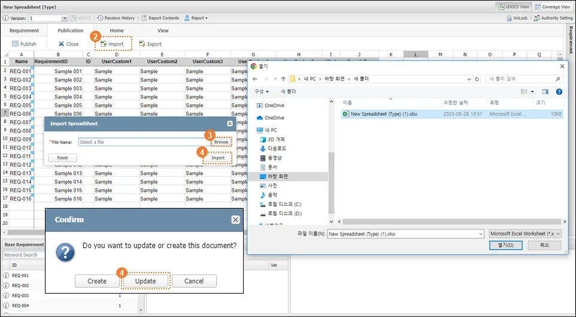

1. sDOCS (Spreadseet Documenting Of Critical S/W)
SILKROAD 문서 편집기 중 sDOCS는 Spreadsheet 기반으로 문서를 작성하고 편집할 수 있는 기능을 제공한다. 문서는 sDOCS에서 새로운 문서를 생성하여 처음부터 작성할 수도 있고, 기존에 사용자가 MS-Excel로 작성된 문서를 가지고 있는 경우, sDOCS로 MS-Excel 파일을 불러올 수 있다. 사용자는 작성된 문서에서 요구사항을 식별하고, 다른 산출물(문서) 내 요구사항과 추적성을 연결할 수 있다.
1.1 화면구성
구분 | 명칭 | 설명 |

| 문서 메뉴 바 | 문서 정보 조회 및 설정, 출력 기능 제공 |

| sDOCS 기능 버튼 | sDOCS 기능 버튼 영역(‘Requirement’탭, ‘Publication’탭, ‘Home’탭, ‘View’탭 |

| 시트 편집 영역 | 시트 편집 영역(Spreadsheet) |

| Base Requirement | 현재 문서 내 등록된 요구사항 목록 |

| Linked Item and Document | 등록된 요구사항과 추적성 연결된 아이템 목록 |

| Document List | 요구사항 Phase, 요구사항 문서 목록 |
1.2 sDOCS 문서 관리
1.2.1 문서 유형 설정(Spreadsheet Field Setting)
sDOCS 문서를 생성하기 위해서는 문서 유형과 사용 필드를 확정하고 위치를 설정하는 ‘문서 유형(Type) 설정’이 선행되어야 한다. 설정은 해당 유형의 sDOCS 문서를 생성하기 전 수행되고 추후 변경 전까지 유지된다.
1.2.1.1 기본 유형(Default) 설정
sDOCS 문서는 기본적인 유형과 속성을 가지고 있어 별도의 사용자 설정이 없는 경우, 기본 유형(Default)과 속성을 이용해 문서를 생성한다. 하지만 기본 유형을 사용하는 경우에도 사용 필드를 확정하기 위해 문서 생성 전 속성 설정을 수행해야 한다.
① Document List ‘Setting’메뉴에서 ‘Spreadsheet Field Setting’을 실행한다.
② Sheet Type – ‘default’를 선택하고 사용할 필드의 체크 박스를 체크한다.
③ ‘Next’ 버튼을 클릭한다.
④ 선택된 필드 목록에서 필드를 드래그 해 위치를 설정한다.
⑤ ‘Save’버튼을 클릭한다.
1.2.1.2 사용자 정의 유형(Custom Type) 설정
사용자는 사용 형태에 따라 문서의 유형과 필드를 추가해 설정할 수 있다. sDOCS 요구사항에 추가 가능한 필드는 text, string type만 가능하다. 문서 생성 전 각 유형별로 사용 필드 설정이 선행되어야 한다.
① Project Manager 또는 사용자 권한이 Admin인 계정을 통해 Project Setting(Custom Filed Setting)을 실행한다.
② Custom Field의 Menu 중 ‘Requirement’를 선택해 spreadsheet 문서에 등록될 요구사항의 필드(text/string)를 추가하거나 수정한다.
③ Custom Field의 Menu 중 ‘RequirementPublication’을 선택하고 Custom Template 중 ‘Combo box’를 드래그 해 Designer 영역에 추가한다.
④ 추가된 Combo box의 Value 영역을 더블 클릭하고 ‘Setup Combobox/Radio Value’창 에서 ‘Add’버튼을 클릭해 Value 위치에 문서 유형을 입력한다.
⑤ Spreadsheet Field Setting을 실행한다.
① Sheet Type – 사용자가 추가한 문서 유형을 선택하고 사용할 필드의 체크 박스를 체크한다.
② ‘Next’ 버튼을 클릭한다.
③ 선택된 필드 목록에서 필드를 드래그 해 위치를 설정한다.
④ ‘Save’버튼을 클릭한다.
⑤ Sheet Type – 사용자가 추가한 문서 유형 모두에 대해 설정을 반복한다.
Spreadsheet Field Setting 의 선택된 필드 목록 가장 상단에 위치한 Requirement ID 필드는 고정 필드로 위치를 변경하거나 삭제 할 수 없다. |
1.2.2 새 문서 등록(Create Spreadsheet)
① Document List에서 문서를 생성할 Phase를 선택 또는 생성(New Phase)한다.
② Document List에서 Phase 선택 후 ‘New Document’ 메뉴의 펼침(▼)버튼을 클릭한다.
③ ‘Create Spreadsheet’ 버튼을 클릭한다.
④ 사용자가 문서 유형을 추가하지 않을 경우 기본 유형(Default)로 문서를 생성한다.
⑤ 사용자가 문서 유형을 추가한 경우, ‘Create Spreadsheet’창이 생성되고 Combo box를 이용해 Sheet Type을 선택해 ‘Create’ 버튼을 클릭한다.
‘Create Spreadsheet’기능은 Phase를 마우스 우클릭해 콘텍스트 메뉴에서 실행할 수 있다.
1.2.3 문서 편집 실행
sDOCS 문서를 편집 가능한 상태로 변경한다. 편집 상태의 문서는 ‘문서 잠금(Lock)’이 자동 설정되고 다른 사용자의 편집을 제한한다. 따라서, 다른 사용자 계정에 의해 ‘문서 잠금(Lock)’ 설정된 문서는 설정한 사용자 또는 프로젝트 관리자에 의해 잠금 해제(Unlock) 후 편집해야 한다. 문서 편집 실행 시 Spreadsheet 영역이 활성화 되고 관련 기능 메뉴가 제공된다.
① Document List에서 편집할 Spreadsheet 문서를 클릭한다.
② sDOCS View에서 ‘sDOCS’ 버튼을 클릭한다.
편집 상태가 아닐 때, ‘문서 잠금(Lock)’버튼을 클릭하는 경우 sDOCS 기능과 같이 편집 상태로 변경된다. |
1.2.4 문서 편집 종료 (Close)
sDOCS에서 Spreadsheet 편집을 종료하는 기능이다. 편집 상태에서 Publication 탭에 위치한 Close 버튼을 클릭해 편집을 종료하고 내용 및 요구사항 수정 유무에 따라 Publish 여부를 결정한다. 편집 종료 시 ‘문서 잠금 해제(Unlock)’가 자동 설정되고 다른 사용자의 접근을 허용한다.
① Document List에서 sDOCS 문서를 선택한다.
② sDOCS 버튼을 클릭 해 편집 상태로 변경한다.
③ Publication 탭의 ‘Close’ 버튼을 클릭한다.
④ Spreadsheet 내용 및 요구사항에 수정이 있는 경우, Publish를 실행한다. Publish를 수행하지 않으면 저장되지 않는다.
편집 상태 일 때, ‘문서 잠금 해제(Unlock)’버튼을 클릭하는 경우 Close 와 같은 기능을 제공한다. |
1.2.5 문서 삭제 (Delete Item)
문서 삭제 기능은 Project Manager 또는 사용자 권한 Super, Admin 을 가진 사용자가 사용할 수 있다. 삭제 기능을 사용할 수 없는 사용자는 Project Manager에게 삭제에 필요한 권한인 메뉴 권한 ‘Admin’을 부여 받아야 한다. 삭제된 문서는 실크로드 내에서 제거되어 복구될 수 없다.
① Document List에서 삭제 할 문서를 클릭한다.
② 마우스를 우클릭 하여 콘텍스트메뉴에서 ‘Delete’클릭한다.
③ ‘Do you want to delete this document?’안내팝업에서‘Yes’를 클릭한다.
잠금 설정(Lock) 문서는 잠금 해제(Unlock) 후 삭제할 수 있다. |
1.2.6 문서 발행 (Publish)
Publish기능은 sDOCS에서 편집한 문서, 요구사항 및 추적성 정보 등을 SILKROAD 서버에 저장하는 기능이다. sDOCS 문서는 최초 생성 시 ‘Draft’ 버전으로 생성되고 Publish를 통해 정식 버전을 부여한다. 문서의 버전(Version)은 시스템에서 기본적으로 ‘1’로 설정되며, 사용자가 변경할 수 있다. 문서 버전은 Publish 실행 시마다 자동으로 이전 문서 버전에서 ‘1’이 증가된다.
① ‘Publish’ 버튼을 클릭한다.
② 필수 입력항목인 문서 제목(Name), 버전(Version) 및 설명(Description)을 입력한다.
③ ‘Publish’ 버튼을 클릭한다.
1.2.7 MS-Excel Import/Export
1.2.7.1 MS-Excel Export
sDOCS를 통해 작성한 문서를 Excel(.xlsx) 문서로 사용자 PC에 저장한다. 문서에 작성된 내용과 요구사항 등록 정보는 최신 상태를 반영하며 등록된 요구사항의 속성(Property) 정보는 Publish 시점을 기준으로 저장한다. 따라서 모든 최신 정보를 반영한 문서를 저장하고자 하는 경우 Publish를 마친 후 Export 해야 한다.
① 문서를 선택하고, ‘sDOCS’버튼을 클릭해 편집 상태로 설정한다.
② ‘Publication’ 탭의 ‘Export’ 버튼을 클릭한다.
Export 된 문서의 1행에는 문서에 사용된 요구사항의 필드명이 표시되고, 데이터 보호를 위하여 [시트 보호]가 설정되어 있어 수정할 수 없다. Export 된 문서의 A열에는 등록된 요구사항 ID가 표시되고, [시트 보호]가 설정되어 있어 수정할 수 없다. 부여된 ID 변경을 위해서는 실크로드 sDOCS 편집 상태에서 요구사항 정보창을 통해 수정해야 한다. |
1.2.7.2 MS-Excel Import(Create)
Excel(.xlsx) 문서를 Import하여 실크로드 프로젝트에 새 문서로 생성하는 기능이다. sDOCS에서 Export 기능으로 로컬 PC에 저장한 Excel 문서 또는 MS-Excel을 통해 작성, 저장된 문서 모두 sDOCS Import 기능을 이용해 실크로드에 새 문서(Create)로 생성할 수 있다.
요구사항이 등록된 문서를 Export 한 후 Import 해 새 문서(Create)를 생성하는 경우, 문서 내용은 유지되나 등록된 요구사항은 모두 삭제된다.
① ‘Publication’ 탭의 ‘Import’ 버튼을 클릭한다.
② ‘Import Spreadsheet’창에서 Browse를 클릭 해 대상 문서(MS-Excel)를 선택한다.
③ Import 버튼을 클릭하고 ‘Create’를 선택한다.
④ 사용자 정의 문서 유형을 설정한 경우, ‘Create Spreadsheet’ 창에서 문서의 유형을 선택한다.
⑤ ‘Create’ 버튼을 클릭한다.
문서 내용, 요구사항 등 변경 사항이 있는 상태에서 Import 실행 시 Publish 여부를 확인하는 팝업이 생성된다. Publish를 진행하지 않고 Import-Update 또는 Create 하는 경우 변경 내용을 저장하지 않고 Update 또는 Create 된 문서를 화면에 표시한다. Excel 문서에 적용된 Hide, 필터 조건은 Import 시 초기화 된다. |
1.2.7.3 MS-Excel Import(Update)
sDOCS에서 Export 기능으로 로컬 PC에 저장한 Excel 문서는 사용자가 로컬에서 수정 후 Import 기능으로 실크로드에 등록된 문서의 내용을 ‘Update’ 할 수 있다. 요구사항에 수정 사항이 있다면 요구사항의 버전이 증가한다. ‘Update’ 시 ‘Pre-verification Result for Import’창을 생성해 Import 문서와 기존 등록된 업데이트 대상 문서를 비교해 추가, 수정이 발생한 요구사항 정보를 제공한다.
① 업데이트 대상 sDOCS 문서를 선택한다.
② ‘Publication’ 탭의 ‘Import’ 버튼을 클릭한다.
③ ‘Import Spreadsheet’창에서 Browse를 클릭 해 대상 문서(MS-Excel)를 선택한다.
④ Import 버튼을 클릭하고 ‘Update’를 선택한다.
⑤ ‘Pre-verification Result for Import’창에서 ‘OK’ 버튼을 클릭한다.
- 문서 내 실크로드에 등록된 요구사항 수와 등록되지 않은 요구사항의 수 및 목록을 표시하고, 수정/삭제 정보를 제공한다.
실크로드에서 Export 한 Excel 파일이 아닌 경우 Excel 파일에 프로젝트, 메뉴 등 경로 정보가 포함되지 않아 Import 시 Create 기능만 제공한다. 업데이트 대상 문서가 삭제되거나 프로젝트 또는 메뉴가 Import를 실행한 위치와 달라 업데이트를 실행 할 수 없을 때는 Create 기능만 제공한다. |
 
|
1.3 요구사항 관리
1.3.1 요구사항 개별 등록 (Add)
sDOCS 문서에 포함된 요구사항 항목을 개별 데이터로 저장하는 기능이다. 요구사항은 식별자(Requirement ID) 칼럼(Column)에 사용자가 입력한 고유의 ID를 식별해 행(Row) 단위로 등록한다. 요구사항 ID가 입력되지 않거나 기존 등록된 요구사항 ID와 중복되는 경우 요구사항을 등록(Add)할 수 없고 안내 팝업을 생성한다.
등록된 요구사항의 정보는 spreadsheet 와 요구사항 정보창으로 수정이 가능하다. 등록된 요구사항 ID 는 셀 보호 설정되어 요구사항 정보창을 통해서만 수정할 수 있다.
① 요구사항으로 등록할 행(Row)의 셀을 클릭한다.
② ‘Requirement’ 탭에서 ‘Add’ 버튼을 클릭한다. 또는 셀이 선택된 상태에서 우클릭 해 ‘Add Requirement’를 클릭한다.
③ ‘OK’ 버튼을 클릭한다.
시트 내 여러 요구사항 행을 범위 선택하고 ‘Add’를 실행해 각 요구사항을 등록(Add)할 수 있다. |
1.3.2 요구사항 자동 등록 (Capture)
sDOCS 문서에 요구사항 식별자(Requirement ID)가 있는 행(Row)을 자동으로 인식해 요구사항으로 등록한다. 동일한 요구사항 ID가 사용된 경우 중복해 등록할 수 없다. ‘Capture’시 중복된 요구사항이 있는 경우 체크박스 체크는 중복된 ID를 가진 요구사항 중 위치상 제일 상단에 위치한 요구사항만 체크하고 다른 중복된 요구사항은 빨간색으로 상태를 표시한다. 해당 기능을 사용하여 문서 내 여러 개의 요구사항을 한꺼번에 쉽고 빠르게 식별, 등록할 수 있다.
① ‘Requirement’ 탭의 ‘Capture’ 버튼을 클릭한다.
② ‘OK’ 버튼을 클릭한다.
1.3.3 요구사항 수정
1.3.3.1 요구사항 내용 수정
등록된 요구사항 내용과 속성(Property) 데이터 수정은 Spreadsheet와 요구사항 정보창에서 수행한다. 요구사항을 등록하고 저장(Publish)된 요구사항의 내용을 수정하면, ‘Base Requirement’ 목록에서 해당 요구사항의 버전(Version)이 상승하고 ID가 굵게(Bold) 표시된다. 문서를 저장하기 전 요구사항의 변경된 내용을 변경 이전 상태로 되돌리는 경우 버전은 상승하지 않게 된다. 요구사항의 버전과 변경 내용은 해당 요구사항 문서를 저장(Publish)하면 반영된다.
① 수정 대상 sDOCS 문서를 선택하고 ‘sDOCS’ 버튼을 눌러 편집을 실행한다.
② 수정할 요구사항 셀을 클릭하여 내용을 수정한다.
③ 또는, Base Requirement 목록에서 요구사항을 더블클릭하거나 정보창 아이콘을 클릭해 생성된 정보창에서 내용을 수정한다.
④ 또는, ‘sDOCS View’에서 수정할 요구사항 ID 셀을 클릭하고, 우 측의 퀵 뷰(Quick View)를 열어 내용을 수정한다.
1.3.3.2 요구사항 아이디 수정
등록된 요구사항의 아이디는 개별 요구사항 정보창에서 수정한다. 정보창을 통해 수정된 요구사항 ID는 저장 시 본문에 반영된다. ‘sDOCS View’ 본문의 요구사항 ID 칼럼(Column)은 요구사항 등록 시 변경 불가한 보호 설정 상태로 수정할 수 없다.
① Base Requirement 목록에서 요구사항을 더블클릭하거나 정보창 아이콘을 클릭해 생성된 정보창에서 ID를 수정한다.
② 또는, ‘sDOCS View’에서 수정할 요구사항 ID 셀을 클릭하고, 우 측의 퀵 뷰(Quick View)를 열어 ID를 수정한다.
1.3.4 요구사항 삭제
등록된 요구사항을 삭제하는 기능이다. Spreadsheet에 작성된 요구사항 내용은 삭제되지 않고 SILKROAD 서버에 저장된 요구사항 정보만 삭제된다. 삭제된 요구사항은 저장(Publish) 완료 시 반영된다.
① sDOCS 본문에서 삭제할 요구사항 행 셀을 클릭 한다.
② ‘Requirement’ 탭의 ‘Requirement’ 그룹에서 ‘Remove’를 클릭한다.
③ 또는 요구사항 영역에서 우클릭 하여 ‘Remove Requirement’를 클릭한다.
시트 내 여러 요구사항 행을 범위 선택해 삭제(Remove)할 수 있다. |
시트 내 여러 요구사항 행을 범위 선택하고 ‘Remove’를 실행해 각 요구사항을 삭제할 수 있다. |
1.3.5 요구사항 정보창
요구사항 정보창은 요구사항 관련한 모든 정보를 표시한다. 요구사항 내용과 관련 속성 필드의 상세 내용을 표시하고 사용자의 역할/권한에 따라 수정할 수 있다. 또한 상·하위 추적 요구사항 정보를 표시해 요구사항 변경에 따른 영향도 분석을 제공한다. 요구사항 버전 콤보 박스를 이용해 선택한 버전의 요구사항 내용과 추적성 연결 정보를 확인할 수 있다.
① Base Requirement 목록에서 요구사항을 더블 클릭하거나, ‘’아이콘을 클릭한다.
② 또는, ‘sDOCS View’에서 요구사항 ID 셀을 클릭하고, 우 측의 퀵 뷰(Quick View)를 연다.
요구사항 정보창을 이용한 편집은 Requirement 메뉴에서만 가능하고 다른 메뉴에서 요구사항 정보창을 여는 경우 읽기 전용 상태로 제공된다. |
1.3.5.1 Properties 탭(ICD View)
요구사항 정보창 Properties 탭은 sDOCS에 추가되고 작성된 요구사항의 최신 필드 데이터를 표시한다. 역할 및 권한(Role & Authorities)에 따라 정보창에서 필드 속성 값을 수정할 수 있고, 수정된 값은 저장 시 sDOCS에 즉시 반영한다. 정보창을 통해 수정된 요구사항은 버전이 상승하고 저장(Publish) 시 반영된다.
사용자 정의 유형(Custom Type)이 설정된 경우 사용자 양식(Form)의 형태로 화면을 구성할 수 있다.
1.3.5.2 Information 탭
요구사항 정보창 Information 탭은 해당 요구사항과 추적성 연결된 상/하위 요구사항 연결 정보를 그리드와 다이어그램 형태로 표시한다. 요구사항의 추적성 정보는 최신 저장(Publish)된 연결 상태를 표시하므로, 추적성 연결을 수정하고 정보창에서 확인하고자 하는 경우 저장(Publish)을 먼저 수행해야한다.
1.3.5.2.1 Impact Analysis
선택한 요구사항의 추적성 연결 정보를 별도로 생성되는‘Impact Analysis’창에서 원하는 배치 상태로 설정하고 확인할 수 있다. wDOCS로 작성된 요구사항은 요구사항 카드에 내용이 표시되고, sDOCS로 작성한 요구사항은 카드 하단의 ‘ ’아이콘을 클릭해 정보창을 생성하고 내용을 확인할 수 있다.
’아이콘을 클릭해 정보창을 생성하고 내용을 확인할 수 있다.
1.3.5.3 문서 비교(Compare)
요구사항 버전별로 발생한 변경사항(추가, 수정, 삭제)을 비교하고 확인하는 기능으로, 사용자 정의 유형(Custom Type)이 설정 문서에 한해 제공된다. 저장(Publish)된 요구사항의 버전과 비교 버전을 선택하고 변경사항을 확인한다.
1) 최신 버전과 직전 버전 비교
① sDOCS 요구사항 정보창을 열어 ‘Compare’버튼을 클릭한다.
① Document Compare 창을 생성해 두 버전 사이 변경된 내용을 비교한다.
② 요구사항 필드에 변경 상태에 따라 색상 표시를 제공한다.
- 파란색 : 수정, 빨간색 : 삭제
2) 사용자 선택 버전 비교
③ sDOCS 요구사항 정보창을 열어 ‘Compare’버튼을 클릭한다.
④ Document Compare 창에서 ‘Base Version’과 ‘Compare Version’콤보박스를 이용해 비교 버전을 선택한다.
⑤ ‘Compare’버튼을 클릭 해 두 버전의 내용을 비교한다.
⑥ 요구사항 필드에 변경 상태에 따라 색상 표시를 제공한다.
- 파란색 : 수정, 빨간색 : 삭제
1.3.5.4 Publication
요구사항이 등록된 문서의 정보창을 생성하는 기능이다. 문서 정보창과 요구사항 정보창은 읽기 전용 상태로 문서의 내용을 편집할 수 없다.
1.3.5.5 요구사항 변경 이력 (Revision)
요구사항의 버전별 변경 정보를 제공한다. 변경 사항은 요구사항 필드 정보와 변경 일자, 버전, 상위 요구사항 정보(Upstream) 그리고 작성자를 기반으로 생성된다.
요구사항 추적성 관리
1.3.6 요구사항 추적성 연결 - Link
상위 요구사항과 하위 요구사항 간 추적성을 연결하는 기능이다. 요구사항 간 추적성을 연결하기 위해서는 반드시 등록된 요구사항이 존재해야 하며, 하나 이상의 상위 문서와 요구사항 추적성을 연결할 수 있다.
요구사항 간의 추적성 연결은 하위 문서에서 실행하여 상위 문서로 연결된다.
① ‘Requirement’ 탭의 ‘Link’ 버튼을 클릭한다.
② ‘Requirement Traceability Editor’ 화면이 생성되면 좌측 ‘Upstream Requirements’ 영역에서 ‘Backward Link’ 버튼을 클릭한다.
③ ‘Selection of Upstream Document’ 화면에서 대상 메뉴를 선택한다.
④ 추적성을 연결 할 상위 문서를 선택한다.
⑤ ‘OK’ 버튼을 클릭한다.
⑥ 우측 하위 요구사항을 좌측 상위 요구사항 영역으로 드래그 한다.
- ‘<’버튼과 단축키 ‘alt+A’를 사용해 추가할 수 있다.
⑦ ‘OK’ 버튼을 클릭한다.
추적성 연결을 삭제/취소할 시, 상위 요구사항에 추가된 하위 요구사항을 선택하고 하위 요구사항 방향으로 Drag&Drop 하거나 화면중앙 ‘>’ 버튼을 클릭, 또는 단축키 ‘alt+D’를 이용한다.
추적성 연결 후 ‘Apply’ 기능을 사용해 설정한 추적성 연결 정보를 저장하고, Link 팝업은 종료되지 않아 연속적으로 다른 문서의 요구사항과 추적성을 연결할 수 있다. OK 버튼 클릭 시, 추적성 연결 정보를 저장하고 편집 창을 종료한다.
1.3.7 요구사항 추적성 연결 - Add Traceability
sDOCS 문서에서 등록된 요구사항 정보창을 통해 추적성을 연결하는 기능이다. 하나의 요구사항과 하나 이상의 상위 요구사항과 추적성 연결이 가능하다. 추적성이 연결된 요구사항은 버전이 상승하고 저장(Publish)해 반영한다.
① sDOCS 화면에서 등록된 요구사항을 우 클릭해 ‘Add Traceability’를 실행한다.
② ‘Add Traceability’창에서 대상 메뉴와 상위 문서를 선택한다.
③ ‘Requirement List’에서 추적성 연결 대상 요구사항 체크박스를 체크한다.
- 또 다른 상위 문서와 추적성 연결 필요 시, 상위 문서를 선택하고 추적성 연결 대상 요구사항 체크박스를 체크한다.
④ ‘OK’버튼을 클릭한다.
1.4 sDOCS Report
sDOCS 문서는 사용자 정의 유형(Custom Type)으로 지정된 경우에 Word 문서 Report를 생성할 수 있다. sDOCS 문서의 Report의 템플릿을 지정하고, 목차 스타일을 지정하는 기능을 제공한다.
1.4.1 Report Template Setting
Report 템플릿을 추가, 삭제하거나 업데이트한다. 각 템플릿의 목차 스타일을 지정해 출력물 생성 시 목차가 자동으로 생성되도록 설정할 수 있다.
1.4.1.1 템플릿 생성
목차 스타일이 존재하는 Word 문서를 Report 템플릿으로 생성한다. 목차 스타일이 설정되지 않은 문서는 Upload가 제한되고 안내 팝업을 생성한다.
① Document List Setting을 클릭해 ‘Report Template Setting’을 실행한다.
② ‘Upload’버튼을 클릭한다.
③ Upload 대상 템플릿(.docx)을 선택한다.
④ Upload 템플릿의 이름을 입력하고 ‘OK’버튼을 클릭 한다.
⑤ Report Template List에 Upload한 템플릿 문서가 생성된다.
1.4.1.2 템플릿 삭제
Report 템플릿과 설정된 목차 스타일을 모두 삭제한다.
① Report Template List에서 템플릿을 선택한다.
② ‘Delete’ 버튼을 클릭한다.
③ ‘OK’버튼을 클릭한다.
1.4.1.3 템플릿 업데이트
템플릿 문서를 업데이트 할 수 있다. 기존 문서에 설정된 ‘Contents Style Setting’은 제거되고 대체된 문서에 대해 재설정해야 한다.
① Report Template List에서 템플릿 문서를 우클릭 한다.
② ‘Update Report Template(*.docx)’를 클릭한다.
③ 업데이트할 Word 문서를 선택한다.
1.4.1.4 템플릿 다운로드
선택한 템플릿 문서를 다운로드 한다. 다운로드한 템플릿 문서에서 수정이 이루어지는 경우 ‘Update Report Template’기능을 통해 기존 등록된 템플릿 문서에 반영한다.
① Report Template List에서 대상 템플릿을 우클릭 한다.
② ‘Report Template Download’를 클릭한다.
1.4.1.5 템플릿 목차 스타일 설정
선택한 템플릿 문서에 목차별 스타일을 설정한다. 각 장절항목을 추가하고 템플릿 문서에 존재하는 스타일 중 적절한 스타일을 선택하여 지정한다. 스타일 생성(Add) 시 장절항목 번호가 1, 1.1, 1.1.1.. 순으로 생성되고 제거(Remove) 하면 마지막 생성된 장절항목부터 순서대로 제거한다.
① Report Template List에서 대상 템플릿을 선택한다.
② Contents Style Setting 영역에서 ‘Add’버튼을 클릭한다.
③ 생성된 장절항목의 콤보박스를 클릭해 스타일을 지정한다.
④ ‘Save’버튼을 클릭한다.
1.4.2 Report Contents
sDOCS 문서 Report 생성을 위해 문서 내용에 따른 목차를 생성하고, 각 장절항목에 요구사항을 추가해 Report 문서 구조를 설정한다.
① Document List에서 대상 문서를 선택한다.
② ‘Report Contents’버튼을 클릭한다.
③ Table of Contents Setting 창의 ‘Table of Contents’영역에서 ‘Add’버튼을 클릭한다.
- 장에서 ‘Add’ 시 장을 절에서 ‘Add’ 시 절을 추가 생성한다.
④ 생성된 목차의 장절항목 제목을 입력한다.
⑤ Elements 영역의 요구사항을 선택해 드래그 하여 장절항목에 추가한다.
- 목차의 장절항목에 이미 추가된 요구사항은 다른 장절항목에 추가할 수 없다.
⑥ ‘Save’버튼을 클릭한다.
Report Contents에서 구성하는 목차의 구조(Depth)는 Report Template Setting에서 설정한 Contents Style Setting의 목차 구조(Depth) 범위를 넘어가지 않아야 한다. |
1.4.3 Report 생성
작성된 sDOCS 문서를 지정한 템플릿과 설정한 목차, 요구사항 구성에 따라 Report를 생성한다. Report 생성을 위해서는 양식 설정과 스타일 설정, 목차 구성이 선행되어야 한다.
① ‘Report Template Setting’을 설정한다. (1.5.1 참조)
② ‘Report Contents’를 설정한다. (1.5.2 참조)
③ Document List에서 sDOCS 문서를 선택하고, sDOCS View의 ‘Report’를 클릭 해 Download PDF/Word를 선택한다.
④ Select Report Template창에서 출력물 양식을 선택하고 ‘Download’버튼을 클릭한다.
Report Download를 위해 Report Contents 의 목차 구조 설정이 선행되어야 한다. 목차 구조가 설정되지 않은 경우, Select Report Template창에서 Download가 동작하지 않고 안내 메시지 팝업을 생성한다. Report Contents의 목차 구조(Depth) 중 스타일이 사전 지정되어 있지 않은 경우, Select Report Template창에서 Download가 동작하지 않고 안내 메시지 팝업을 생성한다. 이를 해결하기 위해서는 ⅰ) 해당 문서 Report Contents의 목차 구조(Depth)를 지정한 양식 스타일에 맞게 수정하거나, ⅱ) Report Template Setting에서 양식의 스타일을 추가로 생성해 지정해주어야 한다. |